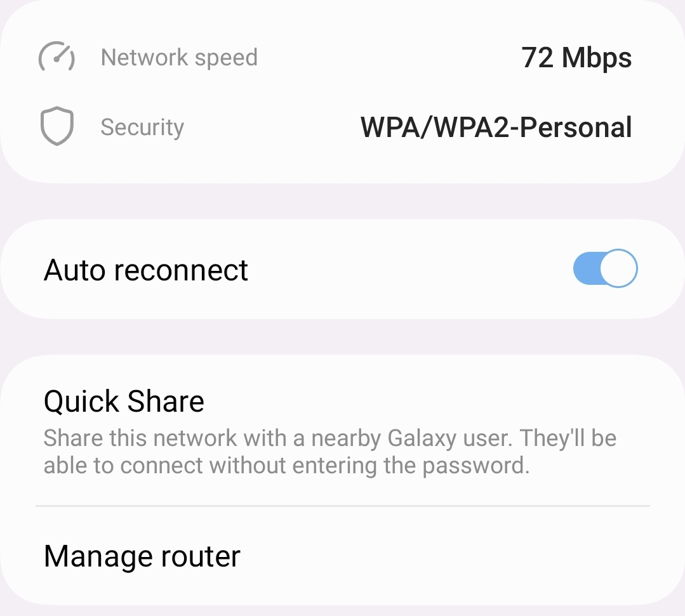
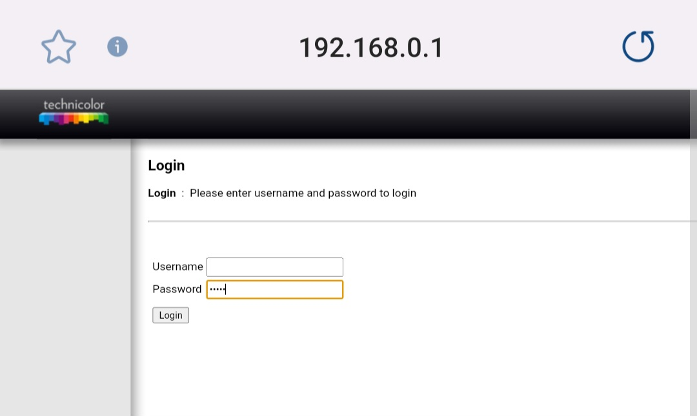
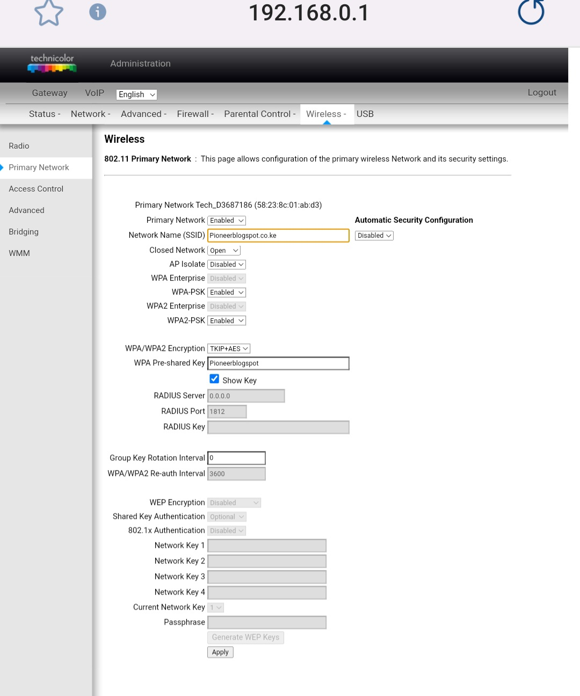

How to change zuku wifi password and wifi name by yourself
Changing the name and password of your Zuku Wi-Fi is an important step in securing your network and preventing unauthorized access. Here's a simple guide on how to change your Zuku Wi-Fi name and password.
Step 1: Connect to your router by going to Settings,then connection,then Wi-Fi, and clicking on your network name.Next to your wifi name there should be a cog wheel click it and below there is a manage router button that will connect you to your router. Alternatively, you can type http://192.168.0.1/ in your browser to connect to your router.

Step 2: Once you've accessed the router youbwill be redirected to the Technicolor router login page, on the form ,leave the username blank and use "admin" as the password to sign in to your router.

Step 3: Click on the "Wireless" tab on the top side and then click on "Primary Network" on the left side. This will give you access to change your Wi-Fi name and password.
Step 4: On the screen that appears, change the network name (SSID) to your preferred name. On the WPA Pre-shared Key, click "Show Key" to display the current Wi-Fi password. Change it to your preferred password and click "Apply.". your router will restart amd the changes will take effect.

If you encounter any issues while changing your Wi-Fi name and password, contact Zuku for assistance.zuku customer care
Changing your Zuku Wi-Fi name and password is a simple process that can be done in a few steps. By following these steps, you can ensure that your network is secure and protected from unauthorized access.